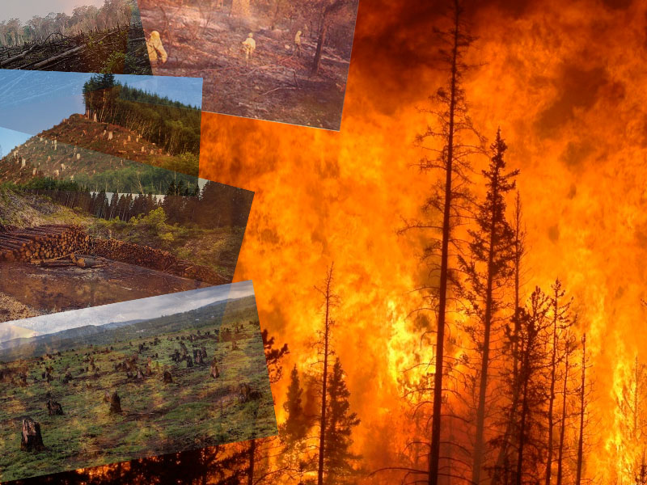

Deforestación
La deforestación es cuando se pierden miles de plantas o hectáreas de plantas y arboles ya sea por obra humada o natural, mayormente humada ya que para muchas cosas dependemos de la tala de arboles ; al paso del tiempo el mundo a sido cada ves mas poblado esto causa una exigencia mas para la naturaleza en este caso de madera.
Otra causa para la perdida en gran cantidad de arboles y plantas son los grandes incendios que se producen por causas naturales o humanas, hay lugares del mundo donde se producen muy seguido matando a miles y miles de arboles.
Collage
-->
